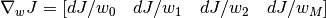

multivariate¶
Univariate Linear Regression using Batch Gradient Descent
@author: Bhishan Poudel
@date: Oct 4, 2017
@email: bhishanpdl@gmail.com
| Outputs: |
|
|---|
-
multivariate.compute_gradient(X1, t, w)[source]¶ Compute the gradient of cost function w.r.t. feature vector w.
Parameters: - X1 (matrix) – Design matrix of shape N, M+1, e.g. 50, 2
- t (column vector) – Target column vector of shape N, 1 e.g. 50, 1
- w (row vector) – Feature row vector of shape 1, M+1 e.g. 1,2
Returns: Gradient row vector of shape 1, M+1 same as shape of w.

gradient:
grad = 1 / len(t) * ( (h-t).T @ X1 )
Return type: grad (row vector)
-
multivariate.compute_rmse(X1, t, w)[source]¶ Compute RMSE.
Parameters: - X1 (matrix) – Design matrix with bias vector. Shape is N, M+1 e.g. 50, 2
- t (column vector) – Target vector. Shape is N, 1 e.g. 50, 1
- w (row vector) – Feature vector. Has dimension 1, M+1 e.g. 1,2
Note
h = X1 @ w.T # h = np.einsum(‘ij,kj->ki’, w, X1) # 1,2 50,2 –> 50,1
-
multivariate.print_train_outputs(epochs, learning_rate, mean_train, std_train, w, rmse, cost)[source]¶
-
multivariate.train_BGD(X1, t, learning_rate, iters)[source]¶ Calculate the feature vector w.
Parameters: - X1 (matrix) – Design matrix with bias column (shape N, M+1 e.g 50,4)
- t (column vector) – Target vector (shape N, 1 e.g. 50, 1)
- learning_rate (float) – Learning Rate (e.g. 0.1)
- iters (int) – Maximum number of iterations to perform.
Returns: Parameter row vector of shape (1, features+1)
Return type: w (row vector)
-
multivariate.train_SGD(X, t, learning_rate, iters)[source]¶ Calculate weight vector Stochastic Grad Desc.
Note
Note that X should be normalized before running batch grad descent.
Parameters: - X (matrix) – Normalized Design matrix with bias term.
- t (column vector) – Normalized Target column vector (shape = 1, samples)
- iters (int) – Number of iterations.
- learning_rate (float) – Learning rate for gradient descent algorithm.
Returns: Parameter row vector of shape (1, features+1)
Return type: w (row vector)